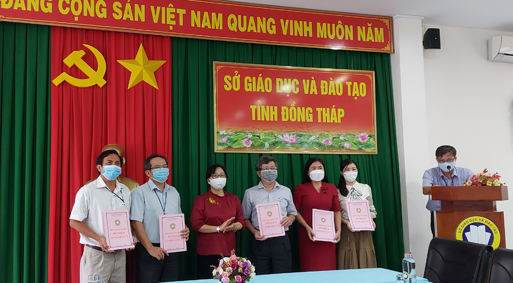

Bổ nhiệm, điều động bổ nhiệm cán bộ quản lý đơn vị thuộc Sở Giáo dục và Đào tạo
Thực hiện Quyết định số 21/2021//QĐ-UBND-TL của Ủy ban nhân dân tỉnh Đồng Tháp về việc Ban hành chức năng nhiệm vụ, quyền hạn và cơ cấu tổ chức của Sở Giáo dục và Đào tạo.
Chiều ngày 01/9/2021, Sở Giáo dục và Đào tạo đã tổ chức Lễ Công bố 11 Quyết định bổ nhiệm, điều động bổ nhiệm lãnh đạo các phòng chuyên môn, nghiệp vụ Sở. Tham dự buổi lễ gồm có bà Nguyễn Thúy Hà – Tỉnh ủy viên - Giám đốc Sở Giáo dục và Đào tạo chủ trì buổi lễ và Lãnh đạo các Phòng, đơn vị thuộc Sở. Theo đó, các Quyết định được Sở Giáo dục và Đào tạo trao như sau: Điều động bổ nhiệm ông Nguyễn Văn Hòa giữ chức vụ Trưởng phòng Kế hoạch – Tài chính; ông Lê Thanh Hùng giữ chức vụ Phó Chánh Thanh tra; ông Nguyễn Hoài Ân giữ chức Phó Trưởng phòng Giáo dục Trung học và Thường xuyên và bà Nguyễn Mai Phương giữ chức vụ Phó Trưởng phòng Tổ chức cán bộ.
Trao quyết định bổ nhiệm các đơn vị sáp nhập, đổi tên như sau: Bổ nhiệm chức vụ Trưởng phòng Quản lý chất lượng cho ông Trương Thanh Bình; Trưởng phòng Giáo dục Trung học và Thường xuyên cho ông Thành Bạch Hải và bổ nhiệm bà Ngô Thúy Anh giữ chức vụ Trưởng phòng Giáo dục Mầm non – Tiểu học. Bổ nhiệm Phó Trưởng phòng Quản lý chất lượng cho bà Nguyễn Thị Thanh Hằng; ông Phạm Thanh Lâm giữ chức Phó Trưởng phòng Giáo dục Trung học và Thường xuyên và bổ nhiệm bà Huỳnh Kim Vui và ông Từ Ngọc Văn giữ chức vụ Phó Trưởng phòng Giáo dục Mầm non – Tiểu học.

Bà Nguyễn Thúy Hà, Giám đốc Sở Giáo dục và Đào tạo (đứng thứ ba từ bên phải đếm qua) trao quyết định bổ nhiệm.
Phát biểu chỉ đạo, bà Nguyễn Thúy Hà thay mặt cho Ban Giám đốc gửi lời chúc mừng và đề nghị các đồng chí luôn giữ vững phẩm chất chính trị, bản lĩnh vững vàng, không ngừng nổ lực phấn đấu, rèn luyện, trau dồi kiến thức nghiệp vụ, kỹ năng quản lý và đoàn kết trong nội bộ để luôn hoàn thành xuất sắc nhiệm vụ được giao.
Thông tin nhân sự được bổ nhiệm, điều động bổ nhiệm:
I. PHÒNG QUẢN LÝ CHẤT LƯỢNG
1.1. Trưởng phòng:
Họ và tên: TRƯƠNG THANH BÌNH, ngày sinh: 30/7/1975;
- Quê quán: xã Vĩnh Thạnh, huyện Lấp Vò, tỉnh Đồng Tháp;
- Ngày vào Đảng dự bị: 21/3/2006; ngày chính thức: 21/3/2007.
- Trình độ:
+ Chuyên môn: Thạc sỹ QLGD;
+ Lý luận chính trị: Cao cấp;
+ Chứng chỉ Bồi dưỡng lãnh đạo cấp Phòng.
1.2. Phó Trưởng phòng
Họ và tên: NGUYỄN THỊ THANH HẰNG, Ngày sinh: 19/12/1974;
- Quê quán: xã Mỹ Trà, thành phố Cao Lãnh, tỉnh Đồng Tháp;
- Ngày vào Đảng dự bị: 05/12/2010; ngày chính thức: 05/12/2011.
- Trình độ:
+ Chuyên môn: Thạc sỹ Toán;
+ Lý luận chính trị: Trung cấp;
+ Chứng chỉ Bồi dưỡng lãnh đạo QL cấp phòng.
II. PHÒNG GIÁO DỤC TRUNG HỌC VÀ THƯỜNG XUYÊN
2.1. Trưởng phòng:
Họ và tên: THÀNH BẠCH HẢI, Ngày sinh: 21/9/1973;
- Quê quán: xã An Hiệp, huyện Châu Thành, tỉnh Đồng Tháp;
- Ngày vào Đảng dự bị: 31/12/2007; ngày chính thức: 31/12/2008.
- Trình độ:
+ Chuyên môn: Thạc sỹ Sinh;
+ Lý luận chính trị: Cao cấp;
+ Chứng chỉ Bồi dưỡng lãnh đạo cấp Phòng.
2.2. Phó Trưởng phòng:
Họ và tên: PHẠM THANH LÂM, Ngày sinh: 05/11/1973;
- Quê quán: xã Long Hậu, huyện Lai Vung, tỉnh Đồng Tháp;
- Ngày vào Đảng dự bị: 13/5/2004; ngày chính thức: 13/5/2005.
- Trình độ:
+ Chuyên môn: Thạc sỹ QLGD;
+ Lý luận chính trị: Trung cấp;
+ Chứng chỉ Bồi dưỡng lãnh đạo cấp Phòng.
3. Phó Trưởng phòng
- Ông NGUYỄN HOÀI ÂN, sinh ngày 21/12/1985;
- Quê quán: xã Mỹ Long, huyện Cao Lãnh, tỉnh Đồng Tháp;
- Đơn vị công tác: Phòng CNTT-TB-TV;
- Chức vụ hiện tại: Phó Trưởng phòng;
- Trình độ chuyên môn: Thạc sỹ Toán;
- Trình độ quản lý giáo dục: Bồi dưỡng quản lý cấp phòng;
- Trình độ lý luận chính trị: Trung cấp.
III. PHÒNG GIÁO DỤC MẦM NON – TIỂU HỌC
3.1. Trưởng phòng:
Họ và tên: NGÔ THÚY ANH, Ngày sinh: 06/01/1978;
- Quê quán: xã An Phước, huyện Châu Thành, tỉnh Bến Tre;
- Ngày vào Đảng dự bị: 14/12/2002, ngày chính thức: 14/02/2003.
- Trình độ:
+ Chuyên môn: Thạc sỹ Giáo dục Tiểu học;
+ Lý luận chính trị: Cao cấp;
+ Bồi dưỡng quản lý cấp Phòng
3.2. Phó Trưởng phòng:
Họ và tên: HUỲNH KIM VUI, Ngày sinh: 22/10/1970
- Quê quán: xã Mỹ Trà, thành phố Cao Lãnh, tỉnh Đồng Tháp;
- Ngày vào Đảng dự bị: 10/12/1997; ngày chính thức: 10/12/1998.
- Trình độ:
+ Chuyên môn: Thạc sỹ;
+ Lý luận chính trị: Cao cấp;
+ Bồi dưỡng lãnh đạo QL cấp Phòng.
3.3. Phó Trưởng phòng:
Họ và tên: TỪ NGỌC VĂN, Ngày sinh: 08/12/1975;
- Quê quán: xã Định Hòa, huyện Lai Vung, tỉnh Đồng Tháp;
- Ngày vào Đảng dự bị: 20/3/2006; ngày chính thức: 20/3/2007.
- Trình độ:
+ Chuyên môn: Thạc sỹ Giáo dục Tiểu học;
+ Lý luận chính trị: Trung cấp;
+ Chứng chỉ Bồi dưỡng lãnh đạo cấp Phòng.
IV. TRƯỞNG PHÒNG KẾ HOẠCH TÀI CHÍNH
- Ông NGUYỄN VĂN HÒA, sinh ngày 10/5/1963;
- Quê quán: xã Tân Bình, huyện Châu Thành, tỉnh Đồng Tháp;
- Nơi ở hiện nay: Phường 1, thành phố Cao Lãnh, tỉnh Đồng Tháp;
- Đơn vị công tác: Phòng CNTT-TB-TV;
- Chức vụ hiện tại: Trưởng phòng;
- Trình độ chuyên môn: Thạc sỹ quản lý giáo dục;
- Trình độ quản lý giáo dục: Bồi dưỡng quản lý cấp phòng;
- Trình độ lý luận chính trị: Trung cấp.
V. PHÓ CHÁNH THANH TRA
- Ông LÊ THANH HÙNG, sinh ngày 21/12/1965;
- Quê quán: khóm Mỹ Thiện, Phường 3, thành phố Cao Lãnh, tỉnh Đồng Tháp;
- Đơn vị công tác: Văn phòng Sở;
- Chức vụ hiện tại: Phó Chánh văn phòng;
- Trình độ chuyên môn: Đại học sư phạm Hóa;
- Trình độ quản lý giáo dục: Bồi dưỡng quản lý cấp phòng;
- Trình độ lý luận chính trị: Cao cấp.
VI. PHÓ TRƯỞNG PHÒNG TỔ CHỨC CÁN BỘ
- Bà NGUYỄN MAI PHƯƠNG, sinh năm 1985;
- Quê quán: Xã Tân Dương, huyện Lai Vung, tỉnh Đồng Tháp;
- Đơn vị công tác: Phòng Giáo dục Mầm non;
- Chức vụ hiện tại: Phó Trưởng phòng;
- Trình độ chuyên môn: Thạc sỹ Giáo dục mầm non;
- Trình độ quản lý giáo dục: Bồi dưỡng quản lý cấp phòng;
- Trình độ lý luận chính trị: Trung cấp.